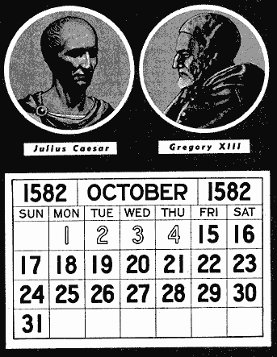

This article is intended for those who may think that Sunday is
the seventh day, or sabbath day, that the Bible designates to be set
aside for the worship of God. It is quite surprising how many people
actually think this. They generally assume that since Saturday and
Sunday are the "weekend", that Monday must be the first day of the week
because it is their first work day of the week. Today, confusion on
this point is compounded by the practice, particularly in Europe for
the last thirty years, of arranging calendars with Monday as the first
day, and Sunday as the seventh day of the week (See
Date and Time by Country). This would then lead you to believe that
Sunday is indeed the seventh day sabbath.
Also contributing somewhat to the confusion is that the numbering of the
Ten Commandments is not uniform. Flavius Josephus, a Jewish Historian of the
1st century, listed the Sabbath Commandment as the fourth*, while the
Catholics and
Lutherans consider it to be the 3rd Commandment, as numbered in the 5th
century by St. Augustine of Hippo (354-430 A.D).
*5. The first commandment teaches us that there
is but one God, and that we ought to worship him only. The second commands
us not to make the image of any living creature to worship it. The third,
that we must not swear by God in a false matter. The fourth, that we must
keep the seventh day, by resting from all sorts of work. The fifth, that we
must honor our parents. The sixth that we must abstain from murder. The
seventh that we must not commit adultery. The eighth, that we must not be
guilty of theft. The ninth, that we must not bear false witness. The tenth,
that we must not admit of the desire of any thing that is another's. —
Josephus,
Antiquities,
Book 3, Chapter 5, 5.
Reading the following papal encyclical, you may even think that
Sunday is the Sabbath:
Making Sunday Holy
248. Allied to what We have said so far is the question of the
Sunday rest.
249. To safeguard man's dignity as a creature of God endowed
with a soul in the image and likeness of God, the Church has always
demanded a diligent observance of the third Commandment: "Remember that
thou keep holy the sabbath day." (52) God certainly has the right and
power to command man to devote one day a week to his duty of
worshipping the eternal Majesty. Free from mundane cares, he should
lift up his mind to the things of heaven, and look into the depths of
his conscience, to see how he stands with God in respect of those
necessary and inviolable relationships which must exist between the
creature and his Creator.
250. In addition, man has a right to rest a while from work, and
indeed a need to do so if he is to renew his bodily strength and to
refresh his spirit by suitable recreation. He has also to think of his
family, the unity of which depends so much on frequent contact and the
peaceful living together of all its members.
251. Thus, religion and moral and physical well-being are one in
demanding this periodic rest, and for many centuries now the Church has
set aside Sunday as a special day of rest for the faithful, on which
they participate in the Holy Sacrifice of the Mass, the memorial and
application of Christ's redemptive work for souls.
252. Heavy in heart, We cannot but deplore the growing tendency
in certain quarters to disregard this sacred law, if not to reject it
outright. This attitude must inevitably impair the bodily and spiritual
health of the workers, whose welfare We have so much at heart.
253. In the name of God, therefore, and for the sake of the
material and spiritual interests of men, We call upon all, public
authorities, employers and workers, to observe the precepts of God and
His Church and to remember their grave responsibilities before God and
society.
Source: Pope John XXIII, encyclical  MATER ET MAGISTRA, ON CHRISTIANITY AND SOCIAL
PROGRESS, MAY 15, 1961.
MATER ET MAGISTRA, ON CHRISTIANITY AND SOCIAL
PROGRESS, MAY 15, 1961.
Some Catholic Catechisms will even give one the impression that
Sunday is the sabbath. The following quotation is from the Catholic Baltimore
Catechism #1, popular in the United States for the last century or
so, intended for the instruction of children. It blurs the distinction
between the Sabbath and Sunday:
Q. What is the third Commandment?
A. The third Commandment is: Remember thou keep holy the Sabbath day.
Q. How are we to worship God on Sundays and holydays of
obligation?
A. We are to worship God on Sundays and holydays of obligation by
hearing Mass, by prayer, and by other good works.
Source:
A Catechism of Christian Doctrine
(No. 1), prepared and enjoined by order of the Third Plenary Council of
Baltimore, bearing the Imprimatur of the Catholic Church, Copyright
1885, by J. L. Spalding, published by P. J. Kenedy & Sons, printers
to the Holy Apostolic See, 44 Barclay St., New York, page 36.
The following Catholic catechisms also boldly state that Sunday is
the day commanded to be kept holy:
Q. Say the Third Commandment.
A. Remember that thou keep holy the Sabbath day.
Q. What is commanded by the Third Commandment?
A. To sanctify the Sunday.
Q. Which is the chief duty by which we are commanded to sanctify the
Sunday?
A. Assisting at the holy sacrifice of the Mass.
Source:
The Most
Rev. Dr. James Butler's Catechism, revised, enlarged,
improved, and recommended by the four R. C. Archbishops of Ireland,
published in New York by P. J. Kenedy, 1886, page 34.
[pg.
276]
...
II. THE COMMANDMENTS OF GOD
Q. Why are the Ten
Commandments called the commandments of God?
A. Because they were given to us by
God himself on Mount Sinai.
[pg.
277]
Q. Which are these Ten Commandments?
A. They are contained, in substance,
in the following verses, which may easily be committed to memory:
1. One God alone, for
evermore
By faith, and hope,
and love, adore.
2. Thou shalt not take his name in vain.
3. The Lord's day thou shalt not profane.
4. Honor thy father, and thy mother.
5. Thou shalt not hurt nor hate thy brother.
6. Thou shalt do no adultery.
7. Thou shalt not steal.
8. Thou shalt not lie.
9. Thou shalt have no impure desire,
10. Nor to thy neighbor's goods aspire.
...
[pg.
278]
Q. What does the Third
Commandment require?
A. It requires us to attend divine
service on Sundays and Holydays, and to spend those days in devotion
and good works.
Q. What does it forbid?
A. It forbids all servile labor
done without strong reasons of necessity, charity or devotion.
Source: The
Mission Book,
A Manual of Instructions and Prayers, drawn chiefly
from the works of St. Alphonsus Liguori, published circa 1861 by the
Missionary Fathers of St. Paul, James B. Kirker, New York, pages
276-278.
[pg. 112]
THE THIRD COMMANDMENT
Remember thou keep holy the Sabbath Day.
Q. When was the Sabbath
instituted?
A. From the creation of the world; for then God
blessed the seventh day, and on it rested from all his works.
Q. When was this commandment renewed?
A. In the old law, when God gave the commandments
of Moses on Mount Sinai.
Q. Why was the Jewish Sabbath changed into the
Sunday?
A. Because Christ rose from the dead, and the Holy
Ghost descended on a Sunday.
Q. By whom was it changed?
A. By the church in the Apostle's time.
[pg. 113] ... O Christian soul, God, as Lord and
Creator of all things has a sovereign right to demand our service at
what time, and in what place he shall ordain, remember, that as your
God and Creator, he has appointed one day in the week to his service,
and this day is Sunday, or the Sabbath day.
Source: The
Poor Man's Catechism: or The Christian Doctrine Explained,
with short admonitions by John Mannock, O.S.B. Published in 1859 by
Edward Dunigan & Brother, James B. Kirker, 371 Broadway, New York,
pages 112, 113.
Note the abbreviation of the Sabbath commandment in each of the
above catechisms which declare that Sunday is the day to be kept holy.
But the commandment declares the seventh-day of the week (Saturday) to
be the Sabbath day, not Sunday the first day (See below Exo. 20:8-11).
Rather than explain how the church has changed a commandment of God,
some Catholic catechisms simply abbreviate the commandment, and then
teach erroneously that Sunday is the Sabbath day intended by the
commandment. Others attribute the change to the Apostles, or, in the
case of The Poor Man's Catechism cited above, boldly state that
God has Himself appointed Sunday to be Sabbath day.
And then there are also some people who will suggest that somehow
we have lost track of the days of the week, and that today, no one can
be sure just what day is the seventh day of the week. Those who wish to
cling to this notion have never actually researched the issue to
discover the facts. So then, when was the sabbath begun? When was the
first sabbath observed, on which day, and who was it intended for?
The First Sabbath Keepers
Gen 2:2 And on the seventh day God ended his work which he had
made; and he rested on the seventh day from all his work which he had
made.
Gen 2:3 And God blessed the seventh day, and sanctified it: because
that in it he had rested.
The very first sabbath was the seventh day of creation.
Look up Saturday in most any dictionary and it will tell you that it is
the seventh day of the week. So who observed the first sabbath day?
Gen 1:27 So God created man in his own image, in the image of
God created he him; male and female created he them.
Gen 1:31 And God saw every thing that he had made, and, behold,
it was very good. And the evening and the morning were the sixth day.
Both Adam and Eve were created on the sixth day, before the
sabbath day, and so were present to observe the day of rest God created
for them. Some will try to claim that the sabbath was a Jewish
festival, part of the Mosaic law that was done away with at the cross.
Since sabbath was established at creation as a memorial of that event,
would that notion then make Adam and Eve Jews? Actually not a single
Jew existed until the covenant made with Abraham, thousands of years
later. The sabbath predates Jews!
Mark 2:27 And he [Jesus] said unto them, The sabbath was made
for man, and not man for the sabbath:
Mark 2:28 Therefore the Son of man is Lord also of the sabbath.
So the seventh-day sabbath was created for Adam and Eve, and all
of humanity, not just for the Jews. Adam lived for 930 years (Gen 5:5),
and undoubtedly was a sabbath keeper his entire life. Adam was not the
only one of the first millennium to keep the sabbath. The same can be
said for Enoch, who was born within the lifetime of Adam. Enoch was so
in harmony with God that he was taken up to heaven and never died (Gen
5:24).
Butler's Catechism, previously cited, gives the
following information about the Sabbath later in a different section:
Q. What divine traditions existed before
Moses wrote the first books of the Old Testament?
A. The duty of sanctifying the Sabbath (Gen.
ii. 3); the prohibition of eating the blood of animals (Gen. ix.
4); the rite of circumcision (Gen. xvi. 10); and generally, the
whole history of religion before the time of Moses, during twenty-five
hundred years.
Q. What traditions of the Christian religion existed
before the several books of the New Testament were promulgated or
written?
A. The substitution of the Sunday, as a holy day,
for the Sabbath, or Saturday; the abrogation of the necessity of
circumcision, and generally, the whole system of the Christian religion.
Source:
The Most
Rev. Dr. James Butler's Catechism, revised, enlarged,
improved, and recommended by the four R. C. Archbishops of Ireland,
published in New York by P. J. Kenedy, 1886, page 58.
So in this instance, a Catholic catechism not only admits the
change from the Sabbath to Sunday, but it even claims that it was the
duty of mankind to keep the Saturday Sabbath beginning with the seventh
day of creation!
Sabbath Keeping After the
Flood.
The Patriarch Abraham, who was born some 1000 years after the
death of Adam, and 300 years after the flood, can also be shown to have
kept the seventh-day sabbath:
Gen 26:5 Because that Abraham obeyed my voice, and kept my
charge, my commandments, my statutes, and my laws.
Clearly since Abraham kept God's laws he must also have faithfully
kept the seventh day sabbath of the Lord.
Moses and the Jews Before
Mount Sinai.
While Israel was captive in Egypt, Pharaoh was not
pleased with them, and gave this reason:
Exo 5:5 And Pharaoh said, Behold, the people of the
land now are many, and ye make them rest from their burdens.
The word rest is H7673, shabath. The same word is
used in Genesis 2:2-3 with the seventh day of creation. Israel was
observing a sabbath rest in Egypt, and this angered Pharaoh who then
commanded them to also gather their own straw to make bricks, but the
quota of bricks was to remain the same. Pharaoh's attempt to force work
on Israel such that they could not rest on the sabbath, led to the
plagues falling on the Egyptians.
After leaving Egypt, but before the commandments of God were given
on stone tablets atop mount Sinai, God had already shown Israel
precisely which day was His sabbath:
Exo 16:23 And he [Moses] said unto them, This is that which the
LORD hath said, To morrow is the rest of the holy sabbath unto the LORD:
Some may think that any old day will satisfy God, but the Lord
left no doubt about the day he wanted observed, he told Moses and the
Israelites exactly which day was the sabbath. For 40 years a double
portion of manna fell on Friday, and no manna fell on sabbath. Note
that this began BEFORE the Ten Commandments were given to Moses on
Sinai. The manna continued until the Israelites entered the promised
land (Exodus 16:35, Joshua 5:12). With 52 weeks a year, that means God
made the seventh day sabbath plain to them for over 2000
weeks. It is a day that does matter to God.
Mount Sinai.
Note that at Sinai the following was said with regard to the
sabbath-
Exo 20:8 Remember the sabbath day, to keep it holy.
Exo 20:9 Six days shalt thou labour, and do all thy work:
Exo 20:10 But the seventh day is the sabbath of the LORD thy
God: in it thou shalt not do any work, thou, nor thy son, nor thy
daughter, thy manservant, nor thy maidservant, nor thy cattle, nor thy
stranger that is within thy gates:
Exo 20:11 For in six days the LORD made heaven and earth, the sea, and
all that in them is, and rested the seventh day: wherefore the LORD
blessed the sabbath day, and hallowed it.
Deu 5:15 And remember that thou wast a servant in the land of
Egypt, and that the LORD thy God brought thee out thence through a
mighty hand and by a stretched out arm: therefore the LORD thy God
commanded thee to keep the sabbath day.
When Moses came up on Sinai, God commanded that the Jews were to
REMEMBER the sabbath day. The sabbath was not first revealed to Israel
on Sinai, they were told to remember what they already knew in no
uncertain terms.
Will Just Any Seven Day Cycle
of Rest Satisfy God?
Some may ask, one day in seven? Well, why can't I
pick my seventh day? Sunday is more convenient for me, or perhaps
Monday, etc., so that will be my day of sabbath rest to the
Lord. I will keep every seventh day holy, but that day will be a day of
my choosing. The notion that God allows one to pick their
seventh day has even been taught by Catholics:
1157. Did not God command us to
observe Saturday, and not Sunday at all?
No. The command as given by Moses in the Name of
God to the Jews was that the Sabbath, and not Saturday, should be kept
holy. The word Sabbath means rest. The law includes two elements; one
essential, that one day in seven should be dedicated to God; the other
ceremonial, that the particular day should be chosen. The Jews selected
Saturday. ...
1159. ...
... The Jews decided to observe Saturday, while
Christians decided to observe Sunday. The seventh day as God's day was
not changed. The Sabbath, God's rest day, was transferred from Saturday
to Sunday.
Source: Radio
Replies, First Volume, by Rev. Dr. Leslie Rumble, M.S.C.
and Rev. Charles Mortimer Carty, Copyright 1938, printed by Radio
Replies Press, St. Paul 1, Minn., U.S.A., #1157 & 1159, page 235.
The problem with the choosing-one-day-in-seven theory
is that it has no foundation in scripture. As we noted above with the
40 years in the wilderness, God clearly designated a specific day
as His Sabbath. Israel was never given a choice in what day
they wanted to keep holy as the Sabbath day. The entire community was
to keep God's designated day in unison as a memorial to creation week.
No one had the prerogative or authority to decide to start keeping some
other day as their Sabbath. Note the reaction when some of Israel
decided to look for manna on the seventh day Sabbath:
Exo 16:27 And it came to pass, that there went out
some of the people on the seventh day for to gather, and they found
none.
Exo 16:28 And the LORD said unto Moses, How long refuse ye to keep my
commandments and my laws?
By not resting on God's designated Sabbath day, the
law and commandments of God had been broken!
Exo 16:29 See, for that the LORD hath given you the
sabbath, therefore he giveth you on the sixth day the bread of two
days; abide ye every man in his place, let no man go out of his place
on the seventh day.
Exo 16:30 So the people rested on the seventh day.
Note that it is emphasized that the Lord God had given
the Sabbath. Neither Moses or Israel had picked the day they wanted to
observe, they were told specifically which day of the week to keep
holy. Keeping it is a sign of loyalty and love for our creator.
Breaking it is the sin of rebellion, because it is breaking the law of
God. No one has the authority to choose the day they will observe as
the seventh day. God did not just institute a seven day cycle, He
blessed and sanctified a specific day as holy. But there is
a choice involved. Either you choose to keep God's seventh day Sabbath,
or you choose to break His commandment by not keeping it, (although
this choice may indeed have been made by many in ignorance.)
So, just how do we know which day is the Sabbath of the
Lord?
Has The Seventh Day Sabbath
Been Lost?
Ask most any Christian what day of the week Jesus rose from the
grave and they would answer that it was a Sunday, but when the issue of
the seventh day Sabbath is raised, some Sundaykeepers will express
doubt about which day is the Sabbath. The following is an excerpt from
a sermon (Program C4029) given by Pastor
Chuck Smith of Calvary
Chapel - Costa Mesa on Sunday, July 2nd, 2000, which tries to
maintain this uncertainty:
Since this is coming from a relatively well known pastor, the
question has to be asked, just who is the "we" spoken of. What
reputable authority can be cited that will confirm that "we" cannot be
certain which is the sabbath day? And exactly which calendar change is
responsible for losing the seventh day of the week? When did this
happen? On what verifiable information is this based? He does not say.
No facts are offered, only an unsupported assertion. Just because
Pastor Chuck Smith does not know which day is really the seventh day
sabbath, does not mean that "we", and he, cannot be
absolutely certain about the day. If some effort to study the matter is
at least attempted, the true seventh day can indeed be known. If there
is uncertainty about one day, are not all similarly in doubt, including
Sunday? For nearly 20 centuries the resurrection of Jesus has been
celebrated on Sunday. How do we know that resurrection day was on a
Sunday? Can we be certain of that day?
Was Sunday The Resurrection
Day?
Mat 28:1 In the end of the sabbath, as it began to dawn toward
the first day of the week, came Mary Magdalene and the other Mary to
see the sepulchre.
Mark 16:2 And very early in the morning the first day of the
week, they came unto the sepulchre at the rising of the sun.
Luke 24:1 Now upon the first day of the week, very early in the
morning, they came unto the sepulchre, bringing the spices which they
had prepared, and certain others with them.
Luke 24:2 And they found the stone rolled away from the sepulchre.
Jesus lay in the tomb on the sabbath, and the sabbath ended at
sundown, (as does every day according to the Bible). The women came to
the tomb at dawn the following day (the first day of the week) and
discovered that the tomb was already empty. Clearly then, the
resurrection occurred after the close of the Sabbath at sundown, yet
prior to sunrise on the first day of the week. Sunday was
indeed the day of the resurrection.
Now, Sundaykeepers seem to have no doubts or problems when it
comes to their keeping the first day of the week, the day of the
resurrection. Catholics in particular, will assert that Sunday was kept
by the Apostles in the first century, and maintained by their church
faithfully as a holy day ever since. However, when it comes to the
previous day, the seventh-day sabbath, suddenly there is talk of
calendar changes and doubt that we can really know the correct seventh
day? How does one lose track of the seventh day of the week while
strictly keeping the next, the first day of the week?
Jesus Knew And Kept The
Sabbath Day.
Since Jesus was God, he knew exactly which day was the
genuine seventh-day sabbath -
Luke 4:16 And he came to Nazareth, where he had been brought up:
and, as his custom was, he went into the synagogue on the sabbath day,
and stood up for to read.
Jesus Himself was a keeper of the seventh-day sabbath. Now, if the
Jews had somehow lost track of the sabbath day since the time of Moses,
Jesus would have certainly corrected them, but this was not
necessary, since they were already observing the right day. As this
establishes a firm reference point in history, it remains for the
skeptic to try and prove that the Jews, and the rest of the world,
somehow collectively lost track of the seventh day Sabbath in the 2000
years since the time of Christ, a period which is very well documented.
The Gregorian Calendar Reform
Sometimes people will say the calendar reform in the Middle Ages
must have altered the weekdays as we know them, so we cannot be sure
which day is the seventh day. Again people that think this have not
researched the issue.
The calendar reform of 1582 was initiated by Pope Gregory XIII
because the calendar established by Julius Caesar, was not accurate and
stable. This was due to the fact that the Julian calendar added a leap
day every 4 years, without exception, and this resulted in adding too
many days than required for an accurate solar calendar. The Julian
calendar had commenced the 1st of January of the 46th year before the
birth of Christ (the 708th from the foundation of Rome). At that time
the Spring equinox fell on March 25th, but because of the Julian
calendar's inaccuracy, it had gradually drifted earlier over the years
to March 10th or 11th by 1582. This error was important to the Catholic
church, because under the solar Julian calendar, the date of Easter
(the most important date to the church), was gradually creeping farther
and farther (earlier and earlier) away from the time of year set by the
Council of Nicea in 325 A.D., when the equinox fell about March 21st.
Easter was then to be observed by Roman Catholics on the first Sunday
after the full moon occurring after the Spring equinox, except
when that coincided with the Jewish Passover, in which case Easter was
delayed to the following Sunday.
To correct this perceived Easter problem, Pope
Gregory XIII (Inter
Gravissimas) returned the Spring equinox to March 21st by
decreeing that Thursday, October 4th, 1582, would be followed not by
the 5th, but by Friday, October 15th. He jumped the calendar 10 days
numerically, but did not change the weekly cycle of days.
So that this correction would be maintained, the Pope then decreed
that leap years would occur only when the year was divisible by four,
and only the centennial years that were divisible by 400 would be leap
years. During a leap year, one day is added to the month of February
(the 29th), as a correction. This method of calendar keeping was
gradually adopted across Europe, and the world, and is nearly universal
today.
England did not adopt the Gregorian calendar until 1752. By that
time, eleven days had been gained so Wednesday, September 2, was
followed by Thursday, September 14. The eleven days were skipped, but
the weekly cycle of days, Sunday through Saturday, remained unchanged
throughout the Middle Ages. (The French Revolution was a notable
exception, when for a period of 14 years (1792-1806) a ten day week was
adopted, the tenth day being the day of rest).
Inquiries made in 1932 to the United States Naval Observatory,
in Washington D.C., and the Royal Greenwich Observatory in
London, England, have also confirmed that the weekly cycle of 7 days as
observed today has not been altered, and remains as it has been since
before the time of Christ.
So both history and the Bible make it quite clear that Sunday is
the first day of the week and Saturday is indeed the seventh day, which
has been kept by the Jews for millennia, even to the present day. The
true seventh-day sabbath of God has not been lost. Our
Saturday is the same day of the week today as the seventh-day
sabbath of creation.
Who Authorized the Switch to
Sunday Keeping?
So what rationale exists for worshipping on Sunday, the first day
of the week, instead of Saturday, the biblical seventh day?
"It is the day of Christ's resurrection and Christians have
transferred the solemnity of Sabbath to Sunday to honor that event."
That sounds terrific, but where exactly does the Bible authorize
that change? You see, I really do adhere to the Protestant claim of
"the Bible and the Bible only" as the authoritative Word of God on the
matter. The sabbath was made by God as a memorial to the creation, and
that event was not overshadowed by or done away with by either the
crucifixion or the resurrection.
Gen 2:3 And God blessed the seventh day, and sanctified it:
because that in it he had rested from all his work which God created
and made.
Exo 20:11 For in six days the LORD made heaven and earth, the
sea, and all that in them is, and rested the seventh day: herefore the
LORD blessed the sabbath day, and hallowed it.
Exo 31:16 Wherefore the children of Israel shall keep the
sabbath, to observe the sabbath throughout their generations, for a
perpetual covenant.
Exo 31:17 It is a sign between me and the children of Israel for ever:
for in six days the LORD made heaven and earth, and on the seventh day
he rested, and was refreshed.
The seventh day was sanctified (dedicated to a holy use) for ever
as a day of rest from all work, as a memorial to the completion of
creation.
If God himself declared the seventh day to be sanctified and holy
for ever, then where in his Word, the Bible, does He rescind the
keeping of the seventh day? Better yet, where in the Bible is the first
day of the week declared to be a holy day to be observed in perpetuity,
as a replacement for the sabbath? So just who made this change to
Sunday?
"Concerning the Authority of the Church.
— The Scripture teaches: Remember that you keep the Saturday; six days
shalt thou labor and do all thy work, but the seventh day is the
Sabbath of the Lord thy God, etc. However, the church has transferred
the observance from Saturday to Sunday by virtue of her own power,
without Scripture, without doubt under the inspiration of the Holy
Spirit."
"Concerning Holidays and Fast-Days. — The
Sabbath is commanded in various places in the Scriptures. But there is
no mention of the cessation of the Sabbath and the institution of
Sunday in the Gospels, or in Paul's writings, or in all the Bible;
therefore this has taken place by the apostolic church instituting it
without Scripture."
"If, however, the church has had power to change the
Sabbath of the Bible into Sunday and to command Sunday- keeping, why
should it not have also this power concerning other days, many of which
are based on the Scriptures — such as Christmas, circumcision of the
heart, three kings, etc. If you omit the latter, and turn from the
church to the Scriptures alone, then you must keep the Sabbath with the
Jews, which has been kept from the beginning of the world." 12
12 Dr. Eck's
Enchiridion, 1533, pp. 78, 79. [Johann Eck was the principle adversary
of Andreas Carlstadt and Martin Luther at the disputation at Leipzig in
1519]
Source:
History
of the Sabbath and First Day of the Week by John Nevins Andrews and L. R. Conradi, Review and Herald Publishing, pg. 587.
The Lord's Day Is The Seventh Day
A second century writer applied "the Lord's day" to the seventh
day Sabbath:
And on the seventh day, it being the Lord's day, he said to
them: Now it is time for me also to partake of food. And having washed
his hands and face, he prayed, and brought out the linen cloth, and
took one of the dates, and ate it in the sight of all.
Source:
Acts of John (Apocryphal).
The Presumed Authority of the Church
... They (those who assert church authority) also refer to the
example of the Apostles, who commanded to abstain from blood and from
things strangled, Acts 15, 29. They refer to the Sabbath-day as having
been changed into the Lord's Day, contrary to the Decalog, as it seems.
Neither is there any example whereof they make more than concerning the
changing of the Sabbath-day. Great, say they, is the power of the
Church, since it has dispensed with one of the Ten Commandments!
Source: The
Augsburg Confession, edited by Philip Melanchthon (1530),
Article 28: Of Ecclesiastical Power.
"He changeth the tymes and lawes that any of the sixe worke
dayes commanded of God will make them unholy and idle dayes when he
lyste, or of their owne holy dayes abolished make worke dayes agen, or
when they changed ye Saterday into Sondaye. . . . They have changed
God's lawes and turned them into their owne tradicions to be kept above
God's precepts."
Source: The Exposition of Daniel the Prophete, Gathered out of
Philipp Melanchthon, Johan Ecolampadius, Chonrade Pellicane, and out of
Johan Draconite etc., by George Joye, 1546, Geneve, p. 119.
Pope Sylvester I (314-335 A.D.) Decrees the Transfer of
Sabbath Rest to Sunday:
Rabanus Maurus (776-856), abbot of Fulda and later archbishop of
Mainz, Germany, was rated one of the greatest theologians of his age
and probably the most cultured man of his time, and exceptionally
learned in patristics. Besides, he was a zealous defender of the papacy
and its teachings. In one of his works, he says,
Pope Sylvester instructed the clergy to keep the feriae.
And, indeed, from an old custom he called the first day [of the week]
the "Lord's [day]," on which the light was made in the beginning and
also the resurrection of Christ is celebrated.6
Rabanus Maurus does not mean to say that Sylvester was the first
man who referred to the days of the week as feriae or who first
started the observance of Sunday among Christians. He means that,
according to the testimony of Roman Catholic writers, Sylvester
confirmed those practices and made them official insofar as his church
was concerned. Hence Rabanus says elsewhere in his writings:
Pope Sylvester first among the Romans ordered that the names
of the days [of the week], which they previously called after the name
of their gods, that is, [the day] of the Sun, [the day] of the Moon,
[the day] of Mars, [the day] of Mercury, [the day] of Jupiter, [the
day] of Venus, [the day] of Saturn, they should call feriae
thereafter, that is the first feria, the second feria, the
third feria, the fourth feria, the fifth feria, the
sixth feria, because that in the beginning of Genesis it is
written that God said concerning each day: on the first, "Let there be
light:; on the second, "Let there be a firmament"; on the third, "Let
the earth bring forth verdure"; etc. But he [Sylvester] ordered [them]
to call the Sabbath by the ancient term of the law, [to call] the first
feria the "Lord's day," because on it the Lord rose [from
the dead], Moreover, the same pope decreed that the rest of the Sabbath
should be transferred rather to the Lord's day [Sunday], on order that
on that day we should rest from worldly works for the praise of God.7
Note particularly, he says that "the same pope [Sylvester I]
decreed that the rest of the Sabbath should be transferred rather to
the Lord's day [Sunday]."8 According to this statement, he
was the first bishop to introduce the idea that the divinely appointed
rest of the Sabbath day should be transferred to the first day of the
week. This is significant, especially in view of the fact that it was
during Sylvester's pontificate that the emperor of Rome [Constantine]
issued the first civil laws compelling men to rest from secular labor
on Sunday, and that Eusebius, bishop of Caesarea, was the first
theologian on record to present arguments, allegedly from the
Scriptures, that Christ did transfer the rest of the Sabbath day to
Sunday.
6 Rabanus Maurus, Liber de
Computo (A book Concerning Computation), Chap. XXVII ("Concerning
Festivals"), as translated by the writer from the Latin text in Migne's
Patrologia Latina, Vol. CVII, col. 682.
7 ------------, De Clericorum
Institutione (Concerning the Instruction of the Clergymen), Book
II, Chap. XLVI, as translated by the writer from the Latin text in Migne's
Patrologia Latina, Vol. CVII, col. 361.
8 The wording in the Latin text
reads: "Statuit autem idem papa ut otium Sabbati magis in diem
Dominicam transferretur, ut ea die a terrenis operibus ad laudandum
Deum vacaremus."
Source: Sabbath and Sunday in Early Christianity, by
Robert L. Odom, � 1977 by the Review and Herald Publishing Association,
pages 247-248.
See also: Exactly Which Pope
Changed The Sabbath To Sunday?
Saturday no longer the liturgical day, but Sunday.
Sunday was created because the Lord was raised and entered the
community of the Apostles to be with them. And thus, they also
understood that Saturday was no longer the liturgical day, but Sunday,
on which the Lord wants to be with us physically again and again, and
wants to nourish us with his Body, so that we ourselves may become his
Body in the world.
Source:
Meeting with Diocesan Clergy of Aosta, Address of Pope Benedict XVI,
Parish Church at Introd (Aosta Valley), Monday, July 25, 2005.
Christians "felt" they had the authority.
63. Christ came to accomplish a new "exodus", to restore freedom
to the oppressed. He performed many healings on the Sabbath (cf. Mt
12:9-14 and parallels), certainly not to violate the Lord's Day, but to
reveal its full meaning: "The Sabbath was made for man, not man for the
Sabbath" (Mk 2:27). Opposing the excessively legalistic interpretation
of some of his contemporaries, and developing the true meaning of the
biblical Sabbath, Jesus, as "Lord of the Sabbath" (Mk 2:28), restores
to the Sabbath observance its liberating character, carefully
safeguarding the rights of God and the rights of man. This is why
Christians, called as they are to proclaim the liberation won by the
blood of Christ, felt that they had the authority to transfer the
meaning of the Sabbath to the day of the Resurrection.
Source: Pope John Paul II,
Dies Domini.
The Church assimilated the meaning of the Sabbath to Sunday.
... The early Christians celebrated the first day of the week as
the Lord’s day, because it was the day of the resurrection. Yet very
soon, the Church also came to realize that the first day of the week is
the day of the dawning of creation, the day on which God said: “Let
there be light” (Gen 1:3). Therefore Sunday is also the Church’s
weekly feast of creation – the feast of thanksgiving and joy over God’s
creation. At a time when creation seems to be endangered in so many
ways through human activity, we should consciously advert to this
dimension of Sunday too. Then, for the early Church, the first day
increasingly assimilated the traditional meaning of the seventh day,
the Sabbath. We participate in God’s rest, which embraces all of
humanity. Thus we sense on this day something of the freedom and
equality of all God’s creatures.
Source: Homily
of Pope Benedict XVI, Saint Stephen’s Cathedral, Vienna,
Sunday, 9 September 2007.
Nothing is said in the Bible about the change of the Lord's day
from Saturday to Sunday. We know of the change only from the tradition
of the Church—a fact handed down to
us from earliest times by the living voice of the Church. That is why
we find so illogical the attitude of many non-Catholics, who say that
they will believe nothing unless they can find it in the Bible and yet
will continue to keep Sunday as the Lord's day on the say-so of the
Catholic Church.
Source: The Faith Explained, Third Edition, by Leo J.
Trese, 1965, Fides/Claretian, 14th printing, 2005, ISBN 1 889334 29 4,
pg.
246.
Doctors of the Church Decreed the Change to Sunday
... we find St. C�sarius of Arles in the sixth century teaching
that the holy Doctors of the Church had decreed that the whole glory of
the Jewish Sabbath had been transferred to the Sunday, and that
Christians must keep the Sunday holy in the same way as the Jews had
been commanded to keep holy the Sabbath Day.
Source: The
Catholic Encyclopedia, entry on Sunday, Volume XIV, Copyright �
1912 by Robert Appleton Company, Online Edition
Copyright � 1999 by Kevin Knight, Nihil Obstat, July 1, 1912. Remy
Lafort, S.T.D., Censor, Imprimatur. +John Cardinal Farley, Archbishop
of New York.
12. Why did the Church change the Lord's Day from the Sabbath
to Sunday?
The Church, using the power of binding and loosing which Christ
gave to the Pope, changed the Lord's day to Sunday because it was on
Sunday (the first day of the week) that Christ rose from the dead and
that the Holy Spirit descended upon the apostles.
Source: Life
in Christ: Instructions in the Catholic Faith, Reverends
James Killgallon, Gerard Weber, 1958, pg. 243.
Cardinal Gibbons on Sunday
"... is not every Christian obliged to sanctify Sunday and to
abstain on that day from unnecessary servile work? Is not the
observance of this law among the most prominent of our sacred duties?
But, you may read the Bible from Genesis to Revelation, and you will
not find a single line authorizing the sanctification of Sunday. The
Scriptures enforce the religious observance of Saturday, a day which we
never sanctify."
Source: The Faith of Our Fathers,
by James Cardinal Gibbons, Archbishop of Baltimore, 88th edition, page
89. Originally published in 1876, republished and Copyright 1980 by TAN
Books and Publishers, Inc., pages 72-73.
Baltimore Catechism #2
10. Q. What are we commanded by the third Commandment?
A. By the third Commandment we are commanded to keep holy
the Lord's day and the holy days of obligation, on which we are to give
our time to the service and worship of God.
11. Q. How are we to worship God on Sundays and holydays
of obligation?
A. We are to worship God on Sundays and holydays
of obligation by hearing Mass, by prayer, and by other good works.
12. Q. Are the Sabbath day and the Sunday the same?
A. The Sabbath day and the Sunday are not the same. The
Sabbath is the seventh day of the week, and is the day which was kept
holy in the old law; the Sunday is the first day of the week, and is
the day which is kept holy in the new law.
13. Q. Why does the Church command us to keep the Sunday
holy instead of the Sabbath?
A. The Church commands us to keep the Sunday holy instead
of the Sabbath because on Sunday Christ rose from the dead, and on
Sunday He sent the Holy Ghost upon the Apostles.
14. Q. What is forbidden by the third Commandment?
A. The third Commandment forbids all unnecessary
servile work and whatever else may hinder the due observance of the
Lord's day.
Source: A Catechism of Christian Doctrine,
prepared and enjoined by the order of the Third Plenary Council of
Baltimore, New Edition, No. 2, Imprimatur by John Cardinal McCloskey,
Archbishop of New York, and approved by James Cardinal Gibbons,
Archbishop of Baltimore, published in 1885 by Broadway Church Goods
House, 719 N. Broadway, Milwaukee, Wisconsin, page 64.
Advanced Catechism
354. What are we commanded by the third Commandment?
By the third Commandment we are commanded to
keep holy the Lord's day and the holy days of obligation, on which we
are to give our time to the service and worship of God.
Which is now the Lord's Day?
The Lord's day now is Sunday, in memory of the
Resurrection of Christ and of the Descent of the Holy Ghost.
355. How are we to worship God on Sundays and holydays
of obligation?
We are to worship God on Sundays and holydays of
obligation by hearing Mass, by prayer, and by other good works. ...
356. Are the Sabbath day and the Sunday the same?
The Sabbath day and the Sunday are not the same.
The Sabbath is the seventh day of the week, and is the day which was
kept holy in the old law; the Sunday is the first day of the week, and
is the day which is kept holy in the new law.
Who made the change from Saturday to
Sunday?
The change from Saturday to Sunday was made by the
Apostles, though the Bible does not clearly teach Sunday observance.
357. Why does the Church command us to keep the Sunday
holy instead of the Sabbath?
The Church commands us to keep the Sunday holy instead of
the Sabbath because on Sunday Christ rose from the dead, and on Sunday
He sent the Holy Ghost upon the Apostles.
358. What is forbidden by the third Commandment?
The third Commandment forbids all unnecessary servile
work and whatever else may hinder the due observance of the Lord's day.
Source: Advanced
Catechism Of Catholic Faith And Practice, based upon the
Third Plenary Council Catechism for use in the higher grades of
Catholic Schools, compiled by Rev. Thomas J. O'brien, inspector of
Parochial Schools, Diocese of Brooklyn, published by John B. Oink,
Chicago Ill., copyright 1929, pages 180-182.
Great is the authority of the Church
You will have noticed, my dear children, that
the day on which we keep the Sabbath is not the same as that on which
it was observed by the Jews. They kept and still keep the Sabbath upon
Saturday, we upon Sunday; they on the seventh day, we on the first day
of the week. Hence the Jews close their shops and attend their
synagogues upon Saturday, but Sunday is observed as the day of rest by
all Christians, even by those sects who are separated from the Catholic
Church. You will ask, what is the reason of this? It is because the
Apostles, who were the first pastors of the Church, by the authority
which [p. 107] they had received from our Blessed Lord to regulate all
that regards his public worship, changed the day appointed for the
keeping of the Sabbath from Saturday to Sunday — from the seventh to
the first day of the week. And why did they do so? To honour the
glorious Resurrection of our Lord and the Descent of the Holy Ghost
upon the Apostles, both of which mysteries were accomplished on the
first day of the week. From this we may understand how great is the
authority of the Church in interpreting or explaining to us the
commandments of God — an authority which is acknowledged by the
universal practice of the whole Christian world, even of those sects
who profess to take the Holy Scriptures as their sole rule of faith,
since they observe as the day of rest not the seventh day of the week
commanded by the Bible, but the first day, which we know is to be kept
holy, only from the tradition and teaching of the Catholic Church.
Source: Catechism Made
Easy, Being A Familiar Explanation Of The Catechism Of Christian
Doctrine, by the Rev. Henry Gibson, Vol. II., Liverpool: printed by
Rockliff Brothers, 44 Castle Street. London: R. Washbourne, 18,
Paternoster Row, 1874, pgs. 106-107.
Cardinal Gasparri's Catholic Catechism
Article 3. The Third Commandment of the Decalogue.
(203) What does God command in the Third
Commandment--"Remember that thou keep holy the Sabbath Day"?
In the Third Commandment-"Remember that thou keep
holy the Sabbath Day"--God commands that festival days--that is, days
dedicated to Him--should be kept with divine worship, business and
bodily toil being laid aside. 190
(204) What were the festival days in the Old Testament?
In the Old Testament there were many festival days,
but the chief one was the Sabbath, the very name of which signifies the
rest needful for the worship of God, whence it is called "the day of
rest."
(205) Why is the Sabbath day not observed under the New
Testament?
The Sabbath day is not observed under the
New Testament, because in its place the Church keeps Sunday in honor of
the Resurrection of Jesus Christ, and the coming
[pg. 121]
down of the Holy Spirit at Pentecost; the Church also adds other
festival days. 191
(206) To what, then, are we bound nowadays as regards
keeping festival days holy?
As regards keeping festival days holy we are to-day
bound to sanctify, in the manner proscribed by the Church, the Sundays
and other Feast Days appointed by her 192
190 Exod. xx, 8; xxxi, 13; Deut. v, 12-15.
191 The commandment about keeping the Sabbath holy was not, if we
consider only the day actually stated, a fixed and constant one, but a
variable one, nor was it so much a moral as a ceremonial precept. If,
however, we consider the commandment itself, it will be evident that it
has its moral aspect and forms part of the natural law. Moreover the
date at which the keeping of the Sabbath was removed was precisely that
at which the rest of the Hebrew cult and ceremonial was to cease―namely the day of Christ's death. See the Catechism
of the Council of Trent, III, iv, 4ff.
Source: The Catholic Catechism,
by Peter Cardinal Gasparri, translated by the Rev. Hugh Pope, O.P.,
second printing, copyright 1932 and printed by P. J. Kenedy & Sons,
Typographi Pontificii, 12 Barclay Street, New York, questions 203-206,
pages 120-121.
THE SABBATH, WHY CHANGED TO SUNDAY
But the Church of God has in her
wisdom ordained that the celebration of the Sabbath should be
transferred to "the Lord's-day:" as on that day light first shone on
the world, so by the resurrection of our Lord on the same day, by whom
was thrown open to us the gate to eternal life, we were called out of
darkness into light; and hence the Apostle would have it called "the
Lord's-day."
Source:
The
Catechism of the Council of Trent (The Roman Catechism),
translated into English by the Rev. J. Donovan, Professor, &c.,
Royal College, Maynooth, 1829, Baltimore: Published by Fielding Lucas,
Jr., pg. 267.
The Church, on the other hand, after changing the day of rest
from the Jewish Sabbath, or seventh day of the week, to the first, made
the Third Commandment refer to Sunday as the day to be kept holy as the
Lord's Day. The Council of Trent (Sess. VI, can. xix) condemns those
who deny that the Ten Commandments are binding on Christians."
Source: The Catholic Encyclopedia,
Commandments of God, Volume IV, � 1908 by Robert Appleton Company -
Online Edition
� 1999 by Kevin Knight, Nihil Obstat - Remy Lafort, Censor Imprimatur -
+John M. Farley, Archbishop of New York, page 153.
Summa Theologica
In the New Law the observance of the Lord's day (Sunday) took
the place of the observance of the Sabbath (Saturday), not by virtue of
the precept (of God) but by the institution of the Church and the
custom (Tradition) of Christian people.
Source: St. Thomas Aquinas: Summa
Theologica
- SS Q[122] A[4] Reply to Objection 4.
Deharbe's Large Catechism
THE THIRD COMMANDMENT OF GOD
"Remember that thou keep holy the sabbath day."
1. What does God command by
this Third Commandment?
By this Third Commandment God Commands us to
keep holy one day of the week, which is thence called the "Lord's Day."
Note. The Jews kept the
Sabbath or the seventh day, Christians keep the Sunday or the first day
of the week.
�2. Why do Christians keep the Sunday instead of the
Sabbath?
Because the Apostles appointed it so in memory of the
Resurrection of Jesus Christ and the Descent of the Holy Ghost, which
events took place on Sunday.
Source: Deharbe's Large Catechism,
translated by a father of the Society of Jesus from the German edition,
prepared for the United States, copyright 1882 and published by
Benzinger Brothers, New York, Cincinnati and Chicago, and blessed in
writing by Pope Leo XIII on January 3rd, 1883, page 58.
A Convert's Catechism
Q. Which is the Sabbath day?
A. Saturday is the Sabbath day.
Q. Why
do we observe Sunday instead of Saturday?
A. We observe Sunday instead of Saturday because the Catholic Church, in
the Council of Laodicea (A.D. 336), transferred the solemnity from Saturday
to Sunday.
Q. Why did the Catholic Church
substitute Sunday for Saturday?
A. The
Church substituted Sunday for Saturday, because Christ rose from the dead on
Sunday, and the Holy Ghost descended upon the Apostles on a Sunday.
Q.
By what authority did the Church substitute Sunday for Saturday?
A.
The Church substituted Sunday for Saturday by the plenitude of that divine
power which Jesus Christ bestowed upon her.
Q. What does the Third Commandment command?
A. The Third Commandment commands us to sanctify Sunday as the Lord's
Day.
Source:
The
Convert's Catechism of Catholic Doctrine, by Reverend
Peter Geiermann, C.S.R., Copyright 1910 by Joseph Gummersbach, blessed
by Pope Pius X on the 25th of January 1910 via Cardinal Merry Del Val,
published by B. Herder Book Co, 15 and 17 South Broadway, St. Louis,
Mo., and London, W. C. 33 Queen Square, in 1937, Twelfth Edition, page
50.
... in 336 A.D., the Catholic Church, at the Council of
Laodicea, made the ecclesiastical law obliging the faithful
to attend Mass and to abstain from servile works on Sundays. And all
Christians
accepted that law in virtue of the divine authority Christ gave to His
Church when He said, "Whatsoever you bind upon earth shall be bound
also
in Heaven; and whatsoever you loose upon earth shall be loosed also in
Heaven" (Matt., xviii, 18).
What does all this mean? It means that the
Seventh Day Adventists are wrong in saying that the Jewish Sabbath
still obliges, for there is clear authority in the Bible for its
abrogation.
Seventh Day Adventists are right,
however, in accusing other Protestants of inconsistency who speak of
any obligation of Sunday observance whilst rejecting the authority of
the Catholic Church. It is not that there is no authority in the Bible
for Sunday observance. But there is no direct authority for it as an
obligation. The only direct authority for it is that of the Catholic
Church; but that involves the authority of the Bible at least
indirectly in so far as the Bible itself teaches clearly that the
Catholic Church is directly authorized by Christ to legislate in His
name.
Source: Seventh Day Adventists, by
Rev. Dr. L. Rumble. M.S.C., published by The Australian Catholic Truth
Society Record, February 10, 1950, pamphlet No. 446, printed by The
Advocate Press, 143-151 o'Beckett St., Melbourne, pg. 24.
The Council of Laodicea
in Phrygia Pacatiana, was a local, Eastern, Greek-speaking synod, and
the canons referring to the Sabbath or Sunday/Lord's day are listed
here:
LAODICEA, CANON 16. - The Gospels are to be read on Sabbath,
with the other Scriptures [apparently at Communion services; see canon
49, below].
LAODICEA, CANON 29. - Christians must not judaize by resting on
the Sabbath, but must work on that day, rather honoring the Lord's Day;
and, if they can, resting then as Christians. But if any shall be found
to be judaizers, let them be anathema from Christ.
LAODICEA, CANON 49. - During Lent, the Bread must not be offered
except on the Sabbath Day and on the Lord's Day only.
LAODICEA, CANON 51. - The nativities of Martyrs [actually, the
death days, on which martyrs were considered to have been born to
eternal life] are not to be celebrated in Lent, but commemorations of
the holy Martyrs are to be made on the Sabbaths and Lord's days.
A Catholic Catechism
THIRD COMMANDMENT OF GOD
"THOU SHALT NOT DO UNNECESSARY SERVILE
WORK ON THE
LORD'S DAY, BUT PERFORM WORKS PLEASING TO GOD."
...
227. Which is the Lord's Day?
The Lord's Day is Sunday.
...
The LAW of keeping Sunday
holy, instead of the Sabbath, was made by the Church, probably by the
apostles.
Source:
A Catholic Catechism for
the Parochial and Sunday Schools of the United States,
Rev. James Groenings, Priest of the Society of Jesus, translated by
Very Rev. James Rockliff, of the same Society, Benzinger Brothers,
Printers to the Holy Apostolic See, copyright 1900, Nihil Obstat:
Theodore Van Rossum, S.J., Censor Deputatus, Imprimatur: Michael
Augustine, Archbishop of New York, page 65.
Faerber's Catechism
THIRD COMMANDMENT OF GOD
Thou shalt keep holy the Lord's day.
209. Which is the Lord's day?
Sunday, the first day of the week, is the Lord's day.
On Sunday, God the Father began creation,
God the Son arose from the dead, and the Holy Ghost descended from
Heaven.—The Jews observed the last day of the week, the Sabbath, and
the Apostles, commissioned by our Lord Jesus Christ, substituted for it
the first day, the Sunday.
Source: Catechism
for the Catholic Parochial Schools of the United States, by
Rev. W. Faerber, 36th edition, Revised, published by B. Herder Book
Co., 17 South Broadway, St. Louis, Mo., and 33 Queen Square, London, W.
C., copyright 1935, page 41.
The Sunday Sabbath flagrantly contradicts the Bible:
It is worth its while to remember that this
observance of the [Sunday] Sabbath, — in which, after all, the
only Protestant worship consists, — not only has no foundation
in the Bible, but it is in flagrant contradiction with its letter,
which commands rest on the [7th day] Sabbath, which is Saturday. It was
the Catholic Church which, by the authority of JESUS
CHRIST, has transferred this rest to the Sunday
in remembrance of the resurrection of the Lord. Thus the observance of Sunday
by the Protestants is an homage they pay, in spite of themselves, to
the authority of the [Roman Catholic] Church.
Source: Plain
Talk About The Protestantism Of Today, from the French of Monsignor Louis
Gaston de Segur, Boston: Patrick Donahoe, 1868, Imprimatur Joannes
Josephus, Episcopus Boston, pg. 225.
CATECHISM
OF POPE PIUS X
The Third Commandment
1 Q. What does the Third Commandment: Remember thou keep holy
the Sabbath day, command us to do?
A. The Third Commandment: Remember thou keep holy the Sabbath
day, commands us to honour God by acts of worship on festivals.
2 Q. What are festivals?
A. In the Old Law they were Saturdays and certain other days
regarded as specially solemn by the Jews; in the New Law they are
Sundays and other festivals instituted by the Church.
3 Q. Why is Sunday sanctified instead of Saturday in the New Law?
A. Sunday, which means the Lord's Day, was substituted for
Saturday, because it was on that day that our Lord rose from the dead.
St. Paul Family Catechism
[pg. 249]
629. Which is the third commandment?
The third commandment is: Remember to keep holy the Lord's day
(cf. Ex. 20:8).
[pg. 250]
630. What are we obliged to do by the third commandment?
By the third commandment we are obliged to worship God on
Sundays and on holy days of obligation by participating in the holy
Sacrifice of the Mass.
...
[pg. 253]
640. Why was Sunday set aside as the Lord's day in place of the
Sabbath of the Old Testament?
Sunday was set aside as the Lord's day in place of the Sabbath of the
Old Testament because of an apostolic tradition which took its origin
from the day of Christ's resurrection. (Acts 20:7)
Source: St. Paul Family Catechism,
Third Edition, Copyright 1992, by the Daughters of St. Paul, published
by St. Paul Books & Media, 50 St. Paul's Ave., Boston MA 02130, pp
249, 251, 253.
A New Catechism
What day was the Sabbath?
The seventh day, our Saturday.
Do you keep the Sabbath?
No: we keep the Lord's Day.
Which is that?
The first day: Sunday.
Who changed it?
The Catholic Church.
Source: A New Catechism of Christian Doctrine and Practice for
School and Home Use, American Edition, Authorized, by James
Bellord, published in Notre Dame, Indiana, by The Ave Maria, 1902,
pages 86-87.
(Also published in London in 1901 by the Catholic Truth
Society.)
Keenan's Catechism
[pg. 53]
Q. When Protestants do profane work upon Saturday, or
the seventh day of the week, do they follow the Scripture as their only
rule of faith?
A. On the contrary, they have only the authority of
tradition for this practice. In profaning Saturday, they violate one of
God's commandments, which he has never clearly abrogated; "Remember
thou keep holy the Sabbath day."
Q. Is the observance of Sunday, as the day of rest, a
matter clearly laid down in Scripture?
A. It certainly is not; and yet all Protestants
consider the observance of this particular day as essentially necessary
to salvation. To say, we observe the Sunday, because Christ rose from
the dead on that day, is to say, that we should rest on Thursday,
because Christ ascended to heaven on that day, and rested in reality
from the work of redemption.
[ pg. 54]
Q. What do you conclude from all this?
A. That Protestants have no Scripture for the measure
of their day of rest; that they abolish the observance of Saturday
without warrant of Scripture; that they substitute Sunday in its place
without scriptural authority; consequently, that for all this, they
have only traditional authority. Yet Protestants would look upon a man
who would do profane work after five o'clock on Sunday, or keep the
Saturday, and profane the first day, as a victim of perdition. Hence we
must conclude, that the Scripture, which does not teach these things
clearly, does not contain all necessary truths; and, consequently,
cannot be the only rule of faith.
[ pg. 108]
Q. Have you any other way of proving that the church
has power to institute festivals of precept?
A. Had she not such power, she could not have done
that in which all modern religionists agree with her - she could not
have substituted the observance of Sunday the first day of the week,
for the observance of Saturday the seventh day, a change for which
there is no Scriptural authority.
Source: Controversial Catechism, by the Rev. Stephen
Keenan, Second Edition revised and enlarged, published in 1849 by John
Doyle, 22 Leith Street, Edinburgh, & J. Chalmers, Castle Street,
Dundee, and in 1851 by C. Dolman, 13 South Hanover Street, Edinburgh;
and 61, New Bond Street, London, pages 53,
54, and 108.
A Doctrinal Catechism,
by Rev. Stephen Keenan, Imprimatur by John Cardinal McCloskey,
Archbishop of New York, Third American Edition, Copyright 1876 by T. W.
Strong, published by P. J. Kenedy, pages 352-355, 174.
By what authority did the Church change the observance of the
Sabbath from Saturday to Sunday?
The Church changed the observance of the Sabbath to Sunday by
right of the divine, infallible authority given to her by her founder,
Jesus Christ. The Protestant, claiming the Bible to be the only guide
of faith, has no warrant for observing Sunday. In this matter the
Seventh-day Adventist is the only consistent Protestant.
Source: The
Catholic Universe Bulletin, Cleveland, Ohio, August 14,
1942.
Anglican Archbishop Declares Tradition as Sunday's Origin
TORONTO, Oct. 27 (BUP).—Rev. Philip Carrington, Anglican
Archbishop of Quebec, sent local clergymen into a huddle today by
saying outright that there was nothing to support Sunday being kept
holy. Carrington defiantly told a church meeting in this city of
straight-laced protestantism that tradition, not the Bible, had made
Sunday the day of worship. He quoted the biblical commandment which
said the seventh day should be one of rest, and then stated: “That is
Saturday.” “Nowhere in the Bible is it laid down that worship should be
done on Sunday,” the Archbishop told a hushed, still audience. Local
parsons read his comments today with set, determined looks. They
refused comment.
Source: News Item, Albertan (Calgary, Alberta, Canada),
Oct. 28, 1949.
Sunday Holy By Habit Not By Scripture Says Anglican Leader
TORONTO, Oct. 27 (BUP).—Rev. Philip
Carrington, Anglican Archbishop of Quebec, sent local clergymen into a
huddle Wednesday by saying outright that there was nothing to support
Sunday being kept holy.
Archbishop Carrington defiantly told a church
meeting in this city of straight-laced Protestantism that tradition,
not the Bible, had made Sunday the day of worship.
He quoted the Biblical commandment which said the
seventh day should be one of rest, and then stated: “That is Saturday.”
“Nowhere in the Bible is it laid down that worship
should be done on Sunday,” the archbishop said.
Source: News Item,
Winnipeg Free Press, Manitoba, Thursday, October 27, 1949, page
16.
Sundaykeeping is not founded on Scripture
"It is a matter of wonderment to us to see Catholic clergymen
using the word ' Sabbath ' for ' Sunday. ' We protest energetically
against the Protestant mode of speech. It does not look well for
Catholics to knuckle to such Protestant fantastic notions. Sunday is
founded, not on Scripture, but on tradition, and is distinctly a
Catholic institution. As there is no Scripture for the transfer of the
day of rest from the last to the first day of the week, Protestants
ought to keep their Sabbath on Saturday, and thus leave Catholics in
full possession of Sunday." — Catholic Record, Sept. 17, 1891.
The Catholic Christian Instructed.
[p. 202]
Q. What are the days which the Church commands to be
kept holy?
A. 1st, The Sunday, or the Lord’s day, which we
observe by apostolical tradition, instead of the Sabbath. …
Q. What warrant have you for keeping the Sunday,
preferably to the ancient Sabbath, which was the Saturday?
A. We have for it the authority of the Catholic
Church, and apostolical tradition.
Q. Does the scripture any where command the Sunday to
be kept for the Sabbath?
A. The scripture commands us to hear the Church, St.
Matt. xviii. 17. St. Luke x. 16, and to hold fast the traditions of the
Apostles, 2 Thess. ii. 15, but the scripture does not in particular
mention this change of the Sabbath. St. John speaks of the Lord's day,
Rev. i. 10; but he does not tell us what day of the week this was, much
less does he tell us that this day was to take the place of the Sabbath
ordained in the commandments: St. Luke also speaks of the disciples
meeting together to break bread on the first day of the week, Acts xx.
7. And St. Paul, I Cor. xvi 2, orders that on the first day of the week
the Corinthians should lay by in store what they designed to bestow in
charity on the faithful in Judea: but neither the one nor the other
tells us, that this first day of
[p. 203]
the week was to be henceforward the day of worship, and the Christian
Sabbath; so that truly, the best authority we have for this is the
testimony and ordinance of the Church. And therefore, those who pretend
to be so religious of the Sunday, whilst they take no notice of other
festivals ordained by the same Church authority, show that they act by
humor, and not by reason and religion; since Sundays and holydays all
stand upon the same foundation, viz, the ordinance of the Church. ...
[p. 204]
Q. What was the reason why the weekly Sabbath was
changed from the Saturday to the Sunday?
A. Because our Lord fully accomplished the work of
our redemption by rising from the dead on a Sunday, and by sending down
the Holy Ghost on a Sunday: as therefore the work of our redemption was
a greater work than that of our creation, the primitive Church thought
the day, in which this work was completely finished, was more worthy
[of] her religious observation than that in which God rested from the
creation, and should be properly called the Lord’s day.
Q. But has the Church a power to make any
alterations in the commandments of God?
A. The commandments of God, as far as they contain
his eternal law, are unalterable and indispensable; but as to whatever
was only ceremonial, they cease to oblige, since the Mosaic law was
abrogated by Christ's death. Hence, as far as the commandment obliges
us to set aside some part of our time for the worship and service of
our Creator, it is an unalterable and unchangeable precept of the
eternal law, in which the Church cannot dispense: but for as much as it
prescribes the seventh day in particular for this purpose, it is no
more than a ceremonial precept of the old law, which obligeth not
Christians. And therefore, instead of the seventh day, and other
festivals appointed in the old law, the Church has prescribed the
Sundays and holydays to be set apart for God's worship; and these we
are now obliged to keep in consequence of God's commandment, instead of
the ancient Sabbath.
Source: The
Catholic Christian Instructed in the Sacraments, Sacrifice, Ceremonies,
and Observances of the Church, by the Right Rev. Dr.
Richard Challoner, published in Baltimore in 1852 by John
Murphy & Co., pp. 202 - 204.
No Scriptural Warrant for Baptizing Infants or Observing
Sunday
It is true, Catholics do not hold, as Protestants profess to do,
that nothing can possibly be matter of divine revelation which is not
contained in holy Scripture, nor do Protestants themselves in fact,
though they do in words; for they believe the inspiration of holy
Scripture to be matter of Divine revelation, yet this, from the very
nature of the [pg 10] case, cannot rest on the testimony of Scripture
itself. So, too, with the duty of baptizing infants, and of observing
Sunday instead of Saturday as the Christian holiday, on which points
Protestants believe and act as Catholics do, while yet they would be
puzzled to find Scripture warrant for so doing. ...
Source: Library of Controversy - The
Clifton Tracts, by the Brotherhood of St. Vincent of Paul, Volume
1, How Do We Know What The Bible Means?, published about 1854
in New York by P. J. Kenedy, Excelsior Catholic Publishing House, 5
Barclay Street, pages 9, 10.
Rebuilding A Lost Faith
Protestants often deride the authority of Church tradition, and
claimed to be directed by the Bible only; yet they, too, have been
guided by customs of the ancient Church, which find no warrant in the
Bible, but rest on Church tradition only! A striking instance of this
is the following:—The first positive command in the Decalogue is to
“Remember the Sabbath Day to keep it holy,” and this precept was
enforced by the Jews for thousands of years. But the Sabbath Day, the
observance of which God commanded, was our Saturday. Yet who among
either Catholics or Protestants, except a sect or two, like the
“Seventh Day Baptists,” ever keep that commandment now? None. Why is
this? The Bible, which Protestants claim to obey exclusively, gives no
authorisation for the substitution of the first day of the week for the
seventh. On what authority, therefore, have they done so? Plainly on
the authority of that very Catholic Church which they abandoned, and
whose traditions they condemn.
Source: Rebuilding a Lost Faith By An American Agnostic,
John L. Stoddard, published in New York by P. J. Kenedy
and Sons, circa 1922, p.
80.
The Observance of Sunday and Civil Laws for its Enforcement
[pg. 139]
Strange as it may seem, the State, in passing laws
for the due sanctification of Sunday, is unwittingly acknowledging the
authority of the Catholic Church, and carrying out more or less
faithfully its prescriptions.
The Sunday, as a day of the week set apart for the
obligatory public worship of Almighty God, to be sanctified by a
suspension of all servile labor, trade, and worldly avocations and by
exercises of devotion, is purely a creation of the Catholic Church.
It is not the Jewish Sabbath; it is, in fact,
entirely distinct from it, and not governed by the enactments of the
Mosaic law. It is part and parcel of the system of the Catholic Church,
as absolutely as Christian marriage is or any other of her sacraments,
her festivals and fasts, her days of joy and mourning, her indulgences
and her jubilees.
[pg. 149]
The Catholic Church created the Sunday and made the very regulations
which have come down on the statute-books, and she still constantly,
from her pulpits, her catechists' chairs, and the confessional, calls
on her faithful to obey them, to sanctify the day, and refrain from all
that desecrates it.
[pg. 152]
For ages all Christian nations looked to the Catholic Church, and, as
we have seen, the various states enforced by law her ordinances as to
worship and cessation of labor on Sunday. Protestantism, in discarding
the authority of the Church, has no good reason for its Sunday theory,
and ought logically, to keep Saturday as the Sabbath, with the Jews and
the Seventh-Day Baptists. For their present practice Protestants in
general have no authority but that of a Church which they disown, and
there cannot be a greater inconsistency than theirs in asking the state
to enforce the Sunday laws.
If it be a mere state holiday, most of the legislative
provisions are a mere tyrannical interference with the liberty of a
citizen; and it is a strange holiday on which people are forbidden to
enjoy themselves, under penalty of fine and imprisonment. If it were
merely this, it would be more sensible to punish the man who wore a
long face on a public holiday than the man who laughed.
It is not a mere legal holiday; it is the Lord's day, set
apart by the Catholic Church. It is a religious holiday, and so long as
it is maintained by law it is therefore only a sorry farce to tell us
that in this country there is no union of church and state.
The state, in referring to the Sunday laws, does it as a
religious duty, acknowledging the Divine supremacy, and enforcing laws
made known through the instrumentality of the Church.
Source: The
American Catholic Quarterly Review, Vol. VIII, No. 29,
January 1883, The Observance of Sunday and Civil Laws for its
Enforcement, John Gilmary Shea, LL.D., published in Philadelphia by
Hardy and Mahony Publishers and Proprietors, pages 139, 149, 152.
Not one scintilla of scriptural proof that Sunday is
divinely appointed:
And now we would ask upon what religious grounds
these earnest advocates for a more strict observance of Sunday
[Protestants] base their claims to make Sunday a day of worship. If all
the new law is contained in the Scripture, there is not one scintilla
of proof that it is the divinely appointed day. Their citadel is not
built upon sand—its condition is worse, it has no foundation at all. It
is said in Holy Writ that "on the first day of the week the disciples
were gathered for prayer and the breaking of bread." It is also said
that on "another occasion, they were gathered for the same purpose on
the first day of the week to hear St. Paul, who preached until
midnight." St. John, it is said, was in the spirit on "the Lord's day."
But this is a mere recital of facts, it is not the promulgation of a
law. It is not the language, nor does it carry the sanction of a law.
Who then, made Sunday, the first day of the week, the newly appointed
day of worship? The divine organism that traces its history through the
centuries back to Christ, that received the commission, "Go and teach
all nations;" that received from the hands of Christ, the divine
founder of the new covenant, the new law of worship, in whose hands was
placed the gift of infallible truth. To that divine organization, the
Catholic Church, was given the law of worship, and she alone decreed
and she alone had the right to decree that Sunday, the first day of the
week, should be the future day of religious worship. The substance
remained as St. Paul says and the victim of her altars was to be
worshipped. So the substance was preserved; she, therefore, decreed the
law, the day of worship and all the ordinances of that worship. All
outside of her [Protestants] are fighting from a religious point view
for a cause which does not belong to them. The Christian Sunday rests
solely upon the teachings of tradition, which they reject.
Source: Western Watchman, a Catholic
journal devoted to the interests of the Catholic Church in the West,
published in St. Louis, Mo., September 19, 1895, front page article:
"Christian Sunday", synopsis of a sermon presented at St. Andrews
Cathedral by Dr. Callaghan, on Sunday Sept. 1st., 1895.
Not An Iota Of Scripture To Establish Sunday
From this same Catholic Church you have accepted your Sunday,
and that Sunday, as the Lord’s day, she has handed down as a tradition;
and the entire Protestant world has accepted it as tradition, for you
have not an iota of Scripture to establish it. Therefore that which you
have accepted as your rule of faith, inadequate as it of course is, as
well as your Sunday, you have accepted on the authority of the Roman
Catholic Church.
Source: The
Papal controversy involving the claim of the Roman Catholic Church to
the church of God, by David Burcham Ray, National Baptist
Publishing Co., St. Louis, Mo., 1892, p. 179.
To Tell You the Truth.
All of us believe many things in regard to religion that we do
not find in the Bible. For example, nowhere in the Bible do we find
that Christ or the Apostles ordered that the Sabbath be changed from
Saturday to Sunday. We have the commandment of God given to Moses to
keep holy the Sabbath Day, that is the 7th day of the week, Saturday.
Today most Christians keep Sunday because it has been revealed to us by
the Church outside the Bible.
Source: The Catholic Virginian,
"To Tell You The Truth,” Vol. 22, No. 49 (Oct. 3, 1947).
The New Question Box
A few weeks ago I saw a reference
to the obligation of hearing Mass on Sunday, tying it to the
commandment to keep holy the Sabbath day. Is this really a law that not
even the pope could change?
The commandment to "keep holy
the Sabbath day" could never be interpreted as a commandment referring
to Sunday Mass. For one thing, the Mass was still many centuries in the
future when Moses received the Ten Commandments. For another, the
Sabbath day - from the Hebrew verb "sabat," rest - was Saturday, the
seventh day of the week, not Sunday.
Christians have, of course, celebrated Sunday as the
Lord's Day from the earliest centuries, but the obligation to attend
Mass on Sunday, as we know it, is comparatively recent. That
obligation, as it now exists in church law, could be removed or
modified by the church itself.
Sabbath changed to Sunday?
Why was the Sabbath
changed from Saturday to Sunday, and is there a chance it might be
changed back someday? The Seventh Day Adventists are passing out
pamphlets dealing with this subject, and they are so convincing that
I've decided to go to Saturday evening Mass until this is explained.
[pg. 119]
The very early
Christians changed the "Sabbath" day to Sunday for a variety of
reasons. First, the fact that the resurrection of Jesus is recorded in
Scripture as occurring on the first day of the week certainly had much
to do with the fact that this seemed the most appropriate day to
celebrate the Eucharist to commemorate that event. The first Christians
also made a point of changing their days of observance (including fast
days) from those proscribed by Jewish law to emphasize their departure
from traditions and customs of the people of Israel.
When the Seventh Day Adventist Church was formed about the
middle of the last century, the four men and one woman who became its
nucleus were somehow convinced that Saturday, not Sunday, should still
be the "holy day" of the week. It is one of the lesser ways the
teachings of that church depart from general Christian tradition.
There's no reason whatsoever to suspect this Sunday tradition will ever
change.
Which day is the Sabbath?
We commonly refer to
the Sabbath as the seventh day of the week. The Bible does not say
this. It does say many times that the Sabbath is the seventh day after
six days of work.
There is a big difference in these two sevens. The seventh
day of the calendar week is one set date each week, but the seventh day
after the beginning of the first day of work can be any day of the week.
The Bible does not speak of any consecutive seven-day
cycles up to the time of the Israelites' first Sabbath. Therefore, we
know that before this time, there was no standard weekly calendar used
such as the one in use at Christ's time.
Though God commanded a Sabbath rest day, he did not
necessarily mean the seventh day. Thus, Sunday-keeping saints have not
gone to hell for not keeping Saturday.
You may be
right. I'm not sure how practical your suggestion is, however. No
matter how theoretically correct you are, I don't believe the argument
will carry much weight with people who believe we must observe the
Sabbath on Saturday.
I believe you would find it difficult to discover evidence
that [pg. 120] observance of a seven-day week came after the Jewish
regulation of rest on the seventh day. Long before the observance of
the Sabbath rest was an established regulation among the Hebrews, a
seven-day week was not all uncommon in several Near Eastern cultures,
including that of the Jews. Apparently this resulted from the division
of the lunar month (28 days) into four sections, though other cultures,
such as the Greeks and Romans, divided the lunar month into three
sections of roughly 10 days each.
It is entirely possible that the Hebrew Tradition of six
days work and one day rest developed out of the context of the
seven-day week, the last day of which would be a day or recuperation
from labor. In other words, the history of the Sabbath may be a
fascinating study, but it doesn't offer much ammunition against
Sabbatarians (those who insist on Saturday as the holy day). Our
reasons for observing Sunday as the Christian holy day arise from
entirely different sources.
Source: The
New Question Box, by John J. Dietzen, M.A., S.T.L., copyright
1988, published by Guildhall, Peoria, Illinois, ISBN 0-940518-01-5,
pages 118, 119, 120.
For 25 Years Father Enright Offers $1,000 For A Bible Verse
Commanding Sunday Observance:
... Christ gave the church the power to make
laws binding upon the conscience. Show me one sect that claims or
possesses the power to do so save the Catholic church. There is none,
and yet all christendom acknowledges the power of the church to do so,
as I will prove to you. For example, the observance of Sunday. How can
other denominations keep this day? The Bible commands you to keep the
Sabbath day. Sunday is not the Sabbath day; no man dare assert that it
is, for the Bible says as plainly as words can make it that the seventh
day is the Sabbath, i.e., Saturday, for we all know Sunday to be the
first day of the week. Besides, the Jews have been keeping the Sabbath
unto the present day. I am not a rich man, but I will give $1,000 to
any man who will prove by the Bible alone that Sunday is the day we are
bound to keep. No, it cannot be done, it is impossible. The observance
of Sunday is solely a law of the Catholic church, and therefore is not
binding upon others. The church changed the Sabbath to Sunday and all
the world bows down and worships upon that day in silent obedience to
the mandates of the Catholic church. Is this not a living miracle? That
those who hate us so bitterly obey and acknowledge our power every week
and DO NOT KNOW IT! ...
Source: The True Church of the Bible, a lecture by Father
Enright, delivered in the Hartford opera house on Monday, February
18th, 1884, and published in The
Hartford Weekly Call, Friday, February 22, 1884, Volume V,
No. 20, Hartford, Lyon County, Kansas, page 1.
Father Enright, a noted Catholic priest of
Iowa, has this to say about the Sabbath and Sunday: "Every one knows
that Sunday is the first day of the week, Saturday is the seventh day,
and the Sabbath, the consecrated day of rest. It is so recognized in
all civilized nations. I have repeatedly offered $1,000 to any one who
will give proof from the Bible that Sunday is the day we are bound to
keep and no one has called for the money. If any person in this town
will show me any scripture for it I will publicly acknowledge it, and
thank him for it. It was the Holy Catholic Church that changed the day
of rest from Saturday to Sunday, the first day of the week. And it not
only compelled all to keep Sunday, but at the council of Laodicea, A.
D., 364, anathematized those who kept the Sabbath, and urged all
persons to labor on the seventh day to labor under penalty of anathema."
Source: Woodland
Daily Democrat, California, Wednesday, November 26, 1890,
page 2.
(Extracts from a lecture delivered by Father Enright at Harlan,
Iowa, December 15, 1889. Reported by the Harlan American.)
The attendance at the Catholic Church on Sunday evening was
unusually large, many being unable to gain admittance. The subject
treated on that evening was "The Power and Authority of the Catholic
Church". Father Enright claimed that the authority and existence of his
church antedated that of the Bible. His remarks upon Sunday observance
created something of a sensation. He said:
“My brethren, look about you upon the various wrangling sects
and denominations. Show me one that claims or possesses the power
to make laws binding on the conscience. There is but one on the face of
the earth—the Catholic Church—that has the power upon the conscience,
binding before God, binding under pain of hell fire. Take, for
instance, the day we celebrate—Sunday. What right have the Protestant
churches to observe that day? None whatever. You say it is to obey the
commandment, "Remember the Sabbath day to keep it holy." But Sunday is
not the Sabbath according to the Bible and the record of time. Everyone
knows that Sunday is the first day of the week, while Saturday is the
seventh day, and the Sabbath, the day consecrated as a day of rest. It
is so recognized in all civilized nations. I have repeatedly offered
$1,000 to anyone who will furnish any proof from the Bible that Sunday
is the day we are bound to keep, and no one has called for the money.
If any person in this city will show me any scripture for it, I will
tomorrow evening publicly acknowledge it and thank him for it. It was
the Holy Catholic Church that changed the day of rest from Saturday to
Sunday, the first day of the week. And it not only compelled all to
keep Sunday, but at the Council of Laodicea, A. D. 364 anathematized
those who kept the Sabbath and urged all persons to labor on the
seventh day under the penalty of anathema.
“Which church does the whole civilized world obey? Protestants
call us every horrible name they can think of — AntiChrist, the scarlet
colored beast, Babylon, etc., and at the same time profess great
reverence for the Bible, and yet by their solemn act of keeping Sunday,
they acknowledge the power of the Catholic Church. The Bible says:
"Remember the Sabbath day to keep it holy." But the Catholic Church
says, "No, keep the first day of the week’ and the whole world bows in
obedience.”
Sources:
The
American Sentinel, Vol. 5, February 6, 1890, No. 6, pg. 46,
and Lake
Union Herald, Vol. 1, Berrien Springs, Mich., Dec. 1, 1909,
No. 57, pgs. 2-3, quoting the Industrial American, of Harlan,
Iowa, December 19, 1889.
I have offered &
still offer $1,000 to any one who can prove to me, from the Bible alone,
that I am bound under grievous sin to keep Sunday holy.
2. It was the
Catholic church that made the law obliging us to keep Sunday holy. This
law was made long after the Bible was written; hence said law is not in
the Bible.
Source:
Letter from 1909 by Father Enright.
Things Catholics Are Asked About
Some non-Catholics object to Purgatory because there is no
specific mention of it in Scripture. There is no specific mention of
the word Sunday in Scripture. The Sabbath is mentioned, but Sabbath
means Saturday. Yet Christians of almost all denominations worship on
Sunday, not Saturday. The Jews observe Saturday. Nowhere in the Bible
is it stated that worship should be changed from Saturday to Sunday.
The fact is that the Church was in existence for several centuries
before the Bible was given to the world. The Church made the Bible, the
Bible did not make the Church.
Now the Church which gave us the Bible, instituted,
by God's authority, Sunday as the day of worship. This same Church, by
the same divine authority, taught the doctrine of Purgatory long before
the Bible was made. We have, therefore, the same authority for
Purgatory as we have for Sunday.
Source:
Things
Catholics Are Asked About, Martin J. Scott, S.J., Litt.D.,
p. 136, Copyright 1927 by P. J. Kenedy & Sons, New York.
Basic Catholic Catechism
Third Commandment: "Remember to keep holy the Lord's day."
1. Sundays and Holy Days: Mass Obligation
In Old Testament times, this commandment required keeping the
Sabbath (Saturday), holy and a day of rest. The day was moved to Sunday
by the authority Christ gave to His Church, to commemorate the
Resurrection of Our Lord and Pentecost Sunday, when the Holy Spirit
came upon the Apostles.
Source: Basic
Catholic Catechism, By Fr. William G. Most, Copyright
1990.
Catholicism and Fundamentalism
After all, fundamentalists meet for worship on Sunday, yet there
is no evidence in the Bible that corporate worship was to be made on
Sundays. The Jewish Sabbath, or day of rest, was, of course, Saturday.
It was the Catholic Church that decided Sunday should be the day of
worship for Christians, in honor of the Resurrection.
Source: Catholicism
and Fundamentalism, by Karl Keating, copyright 1988 by
Ignatius Press, San Francisco, bearing the Nihil Obstat and Imprimatur
of the Catholic Church, page 38.
Curiously, the
Catechism of the Catholic Church today correctly
states clearly that the 10 Commandments cannot be changed by anyone:
2072 Since they express man's fundamental
duties towards God and towards his neighbor, the Ten Commandments
reveal, in their primordial content, grave obligations. They are
fundamentally immutable, and they oblige always and everywhere. No one
can dispense from them. The Ten Commandments are engraved by God in the
human heart.
2076 By his life and by his preaching Jesus attested to the
permanent validity of the Decalogue.
2079 The Decalogue forms an organic
unity in which each "word" or "commandment" refers to all the others
taken together. To transgress one commandment is to infringe the whole
Law (cf. Jas 2:10-11).
But this current magesterial catechism of the highest authority freely
admits that Sunday is not the biblical Sabbath, and then proceeds to
contradict itself on the fundamentally immutable,
permanently valid Ten Commandments, by asserting that Sunday has
replaced the biblical Sabbath for the Christian:
2175
Sunday is expressly distinguished from the sabbath which it follows
chronologically every week; for Christians its ceremonial observance
replaces that of the sabbath. In Christ's Passover, Sunday fulfills the
spiritual truth of the Jewish sabbath and announces man's eternal rest in
God. For worship under the Law prepared for the mystery of Christ, and what
was done there prefigured some aspects of Christ.
So dear reader, you should no longer have any doubt that Sunday is
the first day of week, and that nowhere in the Bible is Sunday blessed,
sanctified or commanded by God as a day of weekly worship. If you claim
to be Protestant, and acknowledge that the Bible is your only ruler of
truth, then on what basis do you worship on Sunday? You have only the
Tradition of the Catholic Church, and it's claim of authority to change
the laws of God to rest your case on. In spite of your claim of
Protestantism, you are casting aside the only day the Bible sanctifies
in perpetuity by the Word of God and you are replacing it with a day
authorized ONLY by the word of Roman Catholic Tradition. If you hallow
Sunday, then you are essentially Catholic on that matter, not a "Bible
Only" Protestant.
So which authority do you acknowledge, the Word of God that
commands seventh day Sabbath worship or the Tradition of the Catholic
Church which commands Sunday, first day worship?
There is no other choice.

{kind=link}
{kind=link}
{kind=link}
{kind=link}
{kind=link}
{kind=link}
{kind=link}
{kind=link}
{kind=link}
{kind=link}
{kind=link}
{kind=link}
{kind=link}
{kind=link}
{kind=link}
{kind=link}
{kind=link}
{kind=link}
{kind=link}
{kind=link}
{kind=link}
{kind=link}
{kind=link}
{kind=link}
{kind=link}
{kind=link}
{kind=link}
{kind=link}
{kind=link}
{kind=link}
{kind=link}
{kind=link}
{kind=link}
{kind=link}
{kind=link}
{kind=link}
{kind=link}
{kind=link}